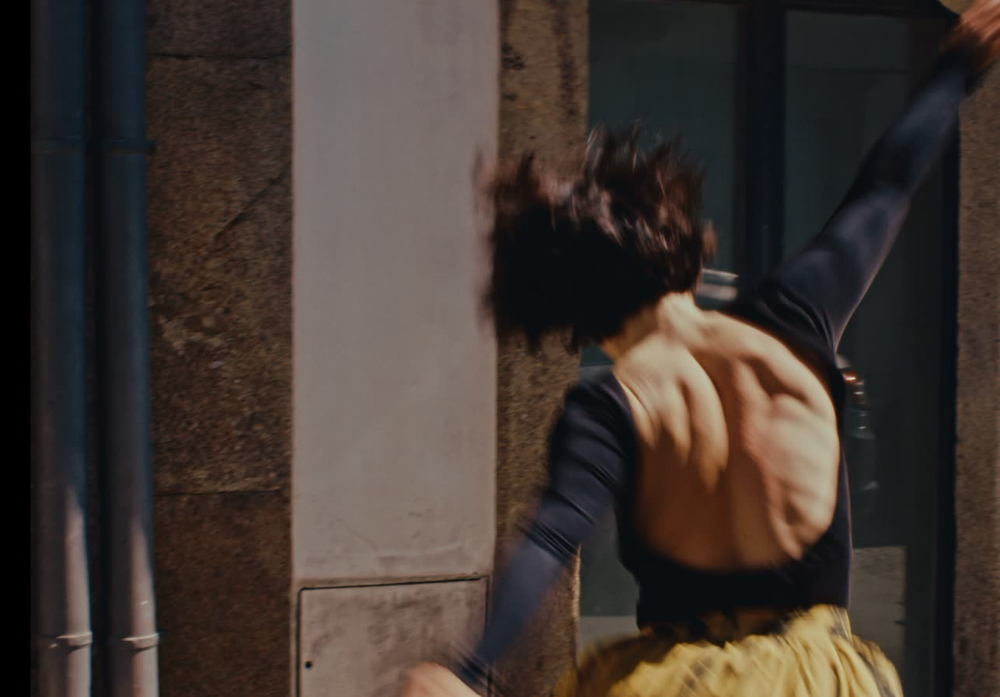
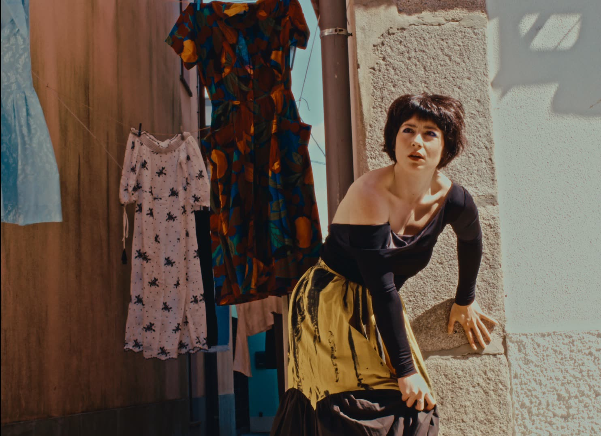
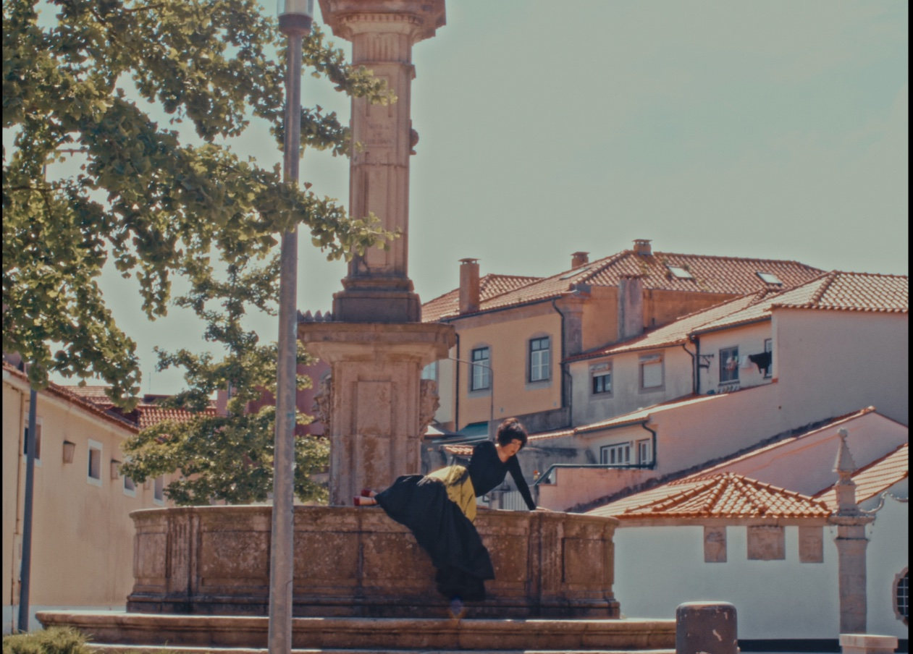
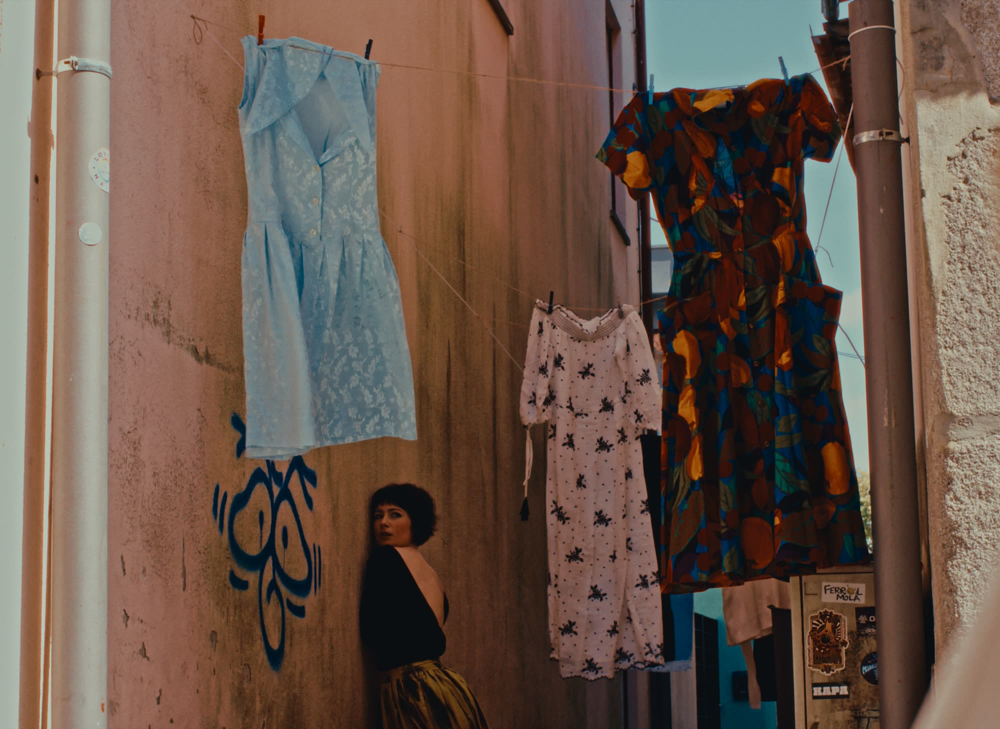

© Ricardo Figueiredo
Waiting is an act of courage. An unsettling feeling that tomorrow will bring a new colour, and that something better awaits us just around the corner. At the same time, however, it is a feeling of emptiness, of restlessness, a temporary void in which, at times, we lose sight of what we are actually waiting for and why we are doing so.
In this process of being reserved for one thing, do we lose a few others that fall by the wayside? Isn't it dangerous to focus our gaze on the end of the street, instead of perhaps taking a chance and casting a curious glance at the balcony of the neighbour above?
When did we learn to whistle and hum as spring unfolds in its own time? And to blow out the candles without wishing that it meant more than it already does.
When do we stop all this noise to realise that the birds have always been there, singing?
Creation and Performance - Juliana Fernandes
Sound Design - Manuel Brásio, with music by José Valente, “Os pássaros estão estragados”
Set Design - Manuel Rodrigues
Support for card design and printing - Samuel Rego and Ricardo Figueiredo
Videography - Afonso Barros
Duration - 20 minutes (adaptable)
Production of Maladra colective
Trailer - vimeo.com/1121130013
This solo was created in a site specific format with live music that can be adapted to different spaces and its settings.
29th April 2025 | Lab.Yrinth Sessions – Lab.Yrinth Porto
17th May and 27th June 2025 | Rua Malandra – Viana do Castelo




© Ricardo Figueiredo